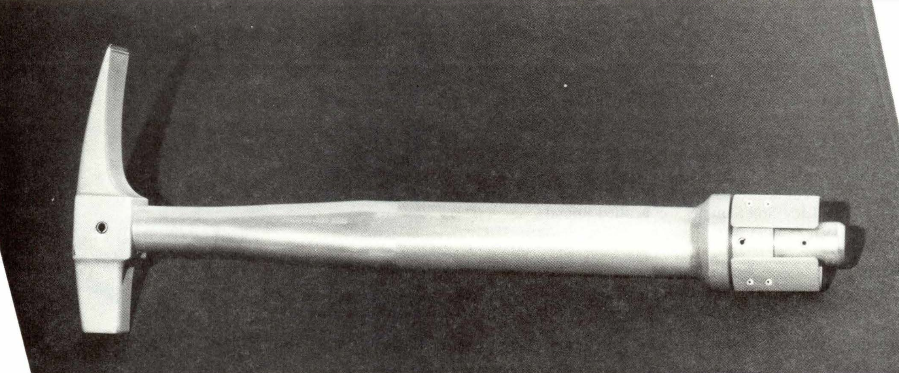
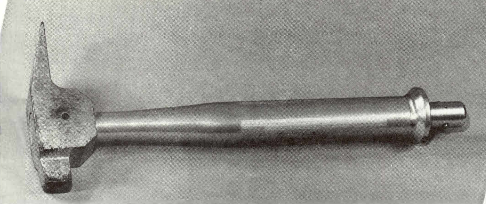

LIGHT AND HEAVY WEIGHT HAMMER
Apollo 11, 12, 14, 15, 16, & 17 Missions
Description
Two basic styles of hammers were used on the
moon. The model used on later missions was heavier with
more surface area on the side of the hammer head.
This tool was used to break chips from rocks or to
drive core tubes into the soil. It was designed to be used as a hoe for digging furrows when
attached to an extension handle.
Physical Attributes
-
Weight
516 g (Light) | 1300 g (Heavy)
-
Dimensions
Overall length 41 cm (Light) | 39 cm (Heavy)
Head Length 16 cm (light) | 16 cm (Heavy)
Head Thickness 3.8 cm (light) | 3.8 cm (Heavy) -
Materials
The hammer head on both styles of hammers was made of tool steel [AISI S5] which was coated with vacuum deposited aluminum. The handles on both styles were made of aluminum alloy 6061-T6.
-
Manufacturer
NASA, Johnson Space Center
Images
-

Lighter weight hammer of the type used on Apollo 11 and 12
(NASA photo S69-3 I 84 7) -

Heavier weight hammer of the type used on Apollo 14, 15, 16, and 17 (NASA photo S71-2247 1) -

Heavier weight hammer in use on Apollo 15
(NASA photo AS15-82-11140)